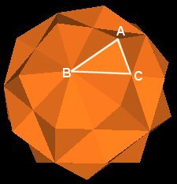

In order to calculate the properties of the 120 Polyhedron, it is helpful to first calculate the coordinates to its vertices. (I will be using Cartesian (x, y, z) coordinates.) But what orientation and scale of the 120 Polyhedron should be used? Is there a preferred orientation and scale which will make calculations easier or which will highlight some important features of the 120 Polyhedron?
In a note published on "synergetics-l@teleport.com", Gerald de Jong showed that the regular Dodecahedron could be assigned simple coordinates expressed in terms of the Golden ratio. This Golden ratio is often represented by the Greek letter phi. However, I will use the letter "p" in this text. The Golden ratio is
which is approximately p = 1.618033989.
Gerald showed that the Dodecahedron's 20 vertices could all be assign numbers from the set {0, -p, p, -p^2, p^2, -p^3, p^3}. This is a remarkable set of numbers. For example, it can easily be shown that
In general, it can be shown that (for n an integer)
Additionally, using these numbers for the coordinates of the regular Dodecahedron highlights the Golden ratio aspects of the polyhedron.
Since the regular Dodecahedron's vertices are the same as 20 of the 120 Polyhedron's vertices, I will use Gerald's 20 coordinates to fix the orientation and scale of the 120 Polyhedron. I will then calculate and fill in the remaining 62-20=42 coordinates.
|
|
|
This is a remarkable set of coordinates. Remember that the 10 Tetrahedra, 5 Cubes, 5 Octahedra, 5 rhombic Dodecahedra, the regular Dodecahedron, Icosahedron and the rhombic Triacontahedron all share their vertices with the 120 Polyhedron. This means that all their vertex coordinates are a subset of the coordinates given above.
Click here for tables defining all these polyhedra. These tables give all the vertex coordinates, edge maps and face maps for these polyhedra.
The combinations of 0, p, p^2, p^3 are also very interesting.
Using the above coordinates, the basic data for the 120 Polyhedron can easily be calculated.
The 120 Polyhedron has 3 types of vertices. Each type of vertex is defined by the other polyhdra that share the vertex.
|

Fig. 9.1 Vertex types |
| Vertex Type |
Shared With The Vertices Of |
| A | Octahedra, Rhombic Dodecahedra |
| B | Icosahedron, Rhombic Triacontahedron |
| C | Regular Dodecahedron, Rhombic Dodecahedra, Cubes,
Tetrahedra, Rhombic Triacontahedron |
The 3 different vertex types of the 120 Polyhedron are at different distances from the Polyhedron's center of volume.
| Vertex Label |
Radius | Approx. |
| A | 2p^2 | 5.236067977 |
| B | sqrt(2+p)p^2 | 4.97979657 |
| C | sqrt(3)p^2 | 4.534567884 |
The edge lengths of the triangular face ABC are
| Edge | Length | Approx. |
| AB | sqrt(3)p | 2.802517077 |
| AC | sqrt(2+p) | 1.902113033 |
| BC | sqrt(2+p)p | 3.077683537 |
The face angles are calculated to be
| Angle Label |
Angle | Approx. |
| BAC | arccos(1/(sqrt(6+3p)p)) | 79.18768304° |
| ABC | arccos((p^2)/sqrt(6+3p)) | 37.37736814° |
| ACB | arccos(p/(2+p)) | 63.43494882° |
The triangular face data is summarized in the following diagram.
|
Fig. 9.2 Triangle Data |
In calculating the volumes of the polyhedra in the 120 Polyhedron, I will use, as Fuller does, the Tetrahedron as unit volume.
| Polyhedron | Coordinate Distance |
Normalized Length |
Volume | Approx. |
| Tetrahedron | Edge 2sqrt(2)p^2 |
1 | 1 | 1.0 |
| Cube | Face Diagonal 2sqrt(2)p^2 |
1 | 3 | 3.0 |
| Octahedron | Edge 2sqrt(2)p^2 |
1 | 4 | 4.0 |
| Rhombic Dodecahedron |
Long Face Diagonal 2sqrt(2)p^2 |
1 | 6 | 6.0 |
| Regular Dodecahedron |
Edge 2p |
1/(sqrt(2)p) | (3/2)(2+p) | 5.427050983 |
| Icosahedron | Edge 2p^2 |
1/sqrt(2) | (5/2)p^2 | 6.545084972 |
| Rhombic Triacontahedron |
Long Face Diagonal 2p^2 |
1/sqrt(2) | 15/2 | 7.5 |
| 120 Polyhedron | Long Face Diagonal of R. Triaconta. 2p^2 |
1/sqrt(2) | 15/p | 9.270509831 |
It is interesting to note that in the 120 Polyhedron, the Icosahedron edge length is equal to the Cube edge length. The Icosahedron edge length is also equal to the distance from the center of volume to an Octahedron vertex.
The appearence of the Golden Ratio p=(1+sqrt(5))/2 in this polyhedron is not at all surprising. After all, the coordinates are given in terms of p and its powers. But what is surprising is that the Golden Ratio provides a way to organize so many polyhedra within a single polyhedron: The 120 Polyhedron that Lynnclaire experienced.
This leads to many questions.
Of particular interest, to me, is "If the Golden Ratio provides such an organizing system for these fundamental polyhedra, which is a reflection of the properties of the Space we live in, then why isn't it taught in Physics courses? Why is it that Physics seems not to have any need for the Golden Ratio when clearly Space (and time) seems to be organized around this ratio?"
The 120 Polyhedron clearly demonstrates that Space is organized around the Golden Mean. The Platonic polyhedra, which are the "fundemental" polyhedra, tell us what kind of space we live in. Physics does take note of this by cataloging the symmetries that the polyhedra exhibit. But Physics seems not to take note of nor utilize the Golden Ratio which can organize all these polyhedron into a single unit.
Time seems to be organized through the Golden Ratio as well. Or, perhaps a better statement of this would be that our perception of time is ordered by the Golden Ratio.
This was pointed out in Huntley's book "The Divine Proportion." Huntley points out that our perception of distances may be related to our brain's perception of time. So, the statement that people find the Golden Rectangle (a rectangle whose edges are in the ratio of p:1) to be must pleasing of various rectangles is a statement about distances as well as time.
In music, the major 6th interval is considered, by most people, to be a very pleasing sound. The major 6th is in the ratio 8:5 which is 8/5=1.6, This is very close to the Golden Ratio p=1.618 (approx.). And music, sound waves, greatly depends on our perception of time.
The Golden Ratio occurs quite frequently in biology. Many growth patterns exhibit the Fibonacci numbers (1, 1, 2, 3, 5, 8, 13, 21, etc.) in which the next number is the sum of the previous 2 numbers. The Fibonacci sequence is known to be connected with the Golden Ratio (see comments below.)
What is different about Biology and Physics is that in Biology, systems grow. They increase and descrease in their constituent components. Physics seems to consider "stable" systems which, although dynamic, do not grow or multiply in their aggregate components.
This is not a very satisfying answer to the question "Where is the Golden Ratio in Physics", particularly since, at a fundemental level, Biology arises from Physics. They really can not be seperated one from the other.
It would also be interesting to know where the Golden Ratio is in Chemistry. How does the Golden Ratio emerge from the Chemical processes? Where is the Golden Ratio in the molecules and atoms which Chemistry uses? Again, it doesn't seem to emerge until there is a time sequence of aggregate growth.
There are lots of questions to be asked and answered.
Before leaving this section, I'd like to point out an interesting equation from Huntley's book.
Although it is often pointed out that the Golden Ratio is the limit of successive Fibonacci numbers
this is also true for any sequence f(n) defined by
where f(n) is an integer for all n. The Fibonacci sequence (1, 1, 2, 3, 5, 8, 13, etc.) is but one such sequence. Any sequence as defined above will work.
The important point is that the Golden Ratio is not exclusively associated with the Fibonacci sequence, as many writings might lead you to beleive.
For example, try f(1)=-23, f(2)=15, then f(3)=-8, f(4)=7, f(5)=-1, f(6)=6, f(7)=5, f(8)=11, f(9)=16, f(10)=27, etc. Then the limit as n approaches infinity of f(n+1)/f(n) will equal the Golden Ratio. (f(10/f(9)=27/16=1.6875 which already starts to show the 1.6... of the Golden Ratio.)
So the Golden Ratio is connected with how the series is constructed and not a particular example of that construction (i.e. the Fibonacci sequence.) The Fibonacci sequence happens to be the most well known example of the construction rule
Returning to consider the coordinates of the 120 Polyhedron's vertices as listed above, it is obvious, from the z-coordinate, that the 62 vertices divide themselves into 9 groups. Each group defines a plane passing through the polyhedron. The spacing between the planes is shown in the next illustration.
|
Fig. 11.1 Vertex layers in the 120 Polyhedron |
The central angles of the intersection of these planes with a circumsphere are given in the next table The results illustrate interesting relations between the angles and the Golden Ratio p. The radius of the sphere is 2p^2 = 2 + 2p.
| cos(18°) | sqrt(2+p)/2 | sin(72°) |
| cos(30°) | sqrt(3)/2 | sin(60°) |
| cos(36°) | p/2 | sin(54°) |
| cos(45°) | 1/sqrt(2) | sin(45°) |
| cos(54°) | sqrt(1+(1/p^2))/2 | sin(36°) |
| cos(60°) | 1/2 | sin(30°) |
| cos(72°) | 1/(2p) | sin(18°) |
|
Fig. 11.2 Central Angles of Planes |
|
Fig. 11.3 Additional Angles |
However, as pointed out above, not all of the 120 Polyhedron's vertices are at the same radial distance from the center of volume. This means that not all of the vertices lay on the circumsphere. I am only illustrating the planes defined by these vertices and not the vertices themselves.